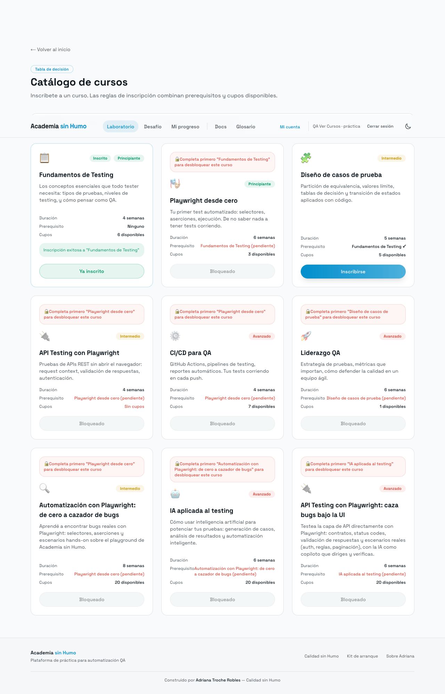

Bug 1: Los cupos disponibles no disminuyen tras inscripción exitosa
Pasos
- Anotar cupos de Fundamentos
- Inscribirse
- Comparar cupos
Datos / valor límite
Valor límite: antes=6, después=6
Esperado
Cupos después = 5
Actual
Cupos permanecen en 6 (6 disponibles)
Evidencia
